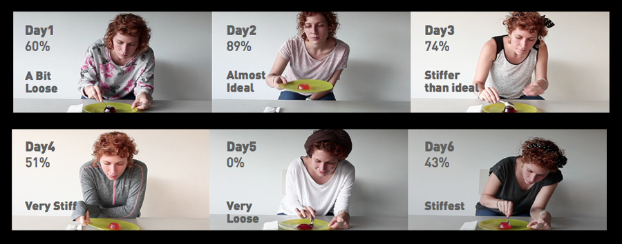

JELL-O Case Study
What if instead of a bar graph to visualize athletic performance data we got a tangible representation of it? The Jell-O case study explores this idea. The output proposed intends to create feelings always new, always different and unexpected for each interaction. The experience of visualizing you performance becomes multi-sensory.It involves touch, smell, taste and eyesight in the form of a dessert.By scanning the percentage of performance for each day the participant obtains a treat at the end of the day with a material consistency that changes accordingly. The end result intends to create different meanings and a superior emotional engagement than what is obtained from the flat pixels.